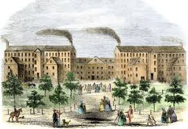
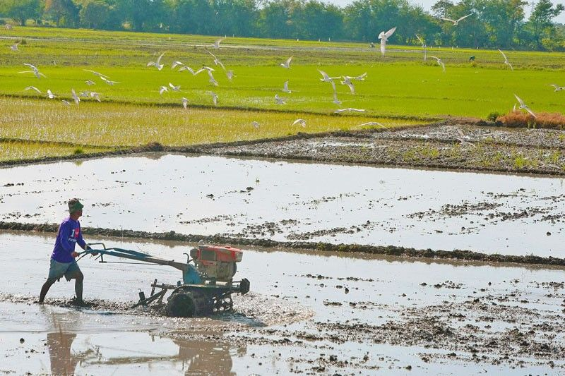

Listen to music while reading ^^

Ano ang industriya?
INDUSTRIYA
Tumutukoy sa pagproseso ng mga hilaw na materyal at paggawa ng mga produkto na kinakailangan para sa pampublikong pamilihan
-Naglalayong maiproseso ang mga hilaw na materyal upang makabuo ng produkto na ginagamit ng tao
SUB SEKTOR NG INDUSTRIYA:
Pagmimina (Mining)
Pagmamanupaktura (Manufacturing)
Konstruksyon (Construction)
Utilities
Pagkuha at pagproseso ng mga yamang mineral (metal, di-metal, o enerhiya) upang gawing tapos na produkto o kabahagi ng isang yaring kalakal
Ang mismong produkto, hilaw man o naproseso ay nagbibigay ng kita para sa bansa
Pagmamanupaktura
Paggawa ng mga produkto sa pamamagitan ng manual labor o ng mga makina
Nagkakaroon ng pisikal o kemikal na transpormasyon ang mga materyal o bahagi nito sa pagbuo ng mga bagong produkto
Konstruksyon
Pagtatayo ng mga gusali, estruktura, at iba pang land improvements
Utilities
Pagtugon ng mga pangunahing pangangailangan ng mga mamamayan tulad ng tubig, kuryente, at gas
Paglalatag ng mga imprastraktura at angkop na teknolohiya upang maihatid ang serbisyo
KAHALAGAHAN:
Pagbabagong teknolohikal
Pagbabagong pangkultura, panlipunan, at pansikolohikal
KAHINAAN:
Policy Inconsistency - Kahinaan ng pamahalaan ng mga polisyang sususporta sa industriya.
Inadequate Investment - Pamumuhunan sa teknolohiya.
Macroeconomic Volatility and Political Instability - Kahinaan ng makroekonomiks at kaguluhan sa politika.
KAHALAGAHAN SA PAMBANSANG KAUNLARAN:
Tumatanggap ng mga produkto mula sa sektor ng agrikultura at ng serbisyo mula sa sektor ng paglilingkod
Nagkakaloob ng hanapbuhay sa maraming Pilipino
Nagpapasok ng dolyar sa bansa
Nakagagamit ng makabagong Teknolohiya
Gumagawa ng mga intermediate products (mga materyales o produkto na ginagamit sa paggawa ng iba pang produkto; hal. wheat - to make bread)
PAGKAKAUGNAY NG AGRIKULTURA AT INDUSTRIYA:
Nagmumula sa agrikultura ang mga hilaw na sangkap na ginagamit sa pagbuo ng mga produkto ng industriya.
Ang mga ginagamit na traktora, sasakyang pangingisda, at iba pang produkto ay mula sa industriya na ginagamit ng mga magsasaka upang magkaroon ng mataas na produksyon na magbibigay ng malaking kita sa sektor ng agrikultura.
Ang dami ng lakas-paggawa sa mga mamimili ay nagpapakita ng lubos na pagtutulungan sa mga sector ng industriya at agrikultura.
Ang agrikultura ang pinagmumulan ng pagkain ng mga industriya na siyang tumutugon sa mga pagkaing kinakailangan ng mga tao.
Ang industriya ang nagbibigay ng malaking kontribusyon sa ekonomiya.
Ang mga sangkap ay nagkakaroon ng transpormasyon dahil sa mga lakas–paggawa na gumagawa upang madagdagan ang halaga nito at lalo pang gumanda.
SULIRANIN NG INDUSTRIYA
Pondo at kompetisyon
Paghina ng lokal na industriya
Demand

Ano-ano ang ating mga tungkulin?
MGA PATAKARANG PANG-EKONOMIYA:
Filipino First Policy:
Nagsimula sa programang FIlipino Muna ni Pangulong Carlos P. Garcia
Naglalayong bigyan ng higit na malaking partisipasyon ang mga Pilipino sa pagpapatakbo ng ekonomiya
Oil Deregulation Law (R.A. 8479):
Nagbukas ng kompetisyon sa industriya ng langis
Ang pamilihan ang nagdidikta sa presyo ng petrolyo, at hindi ito maaaring pakialaman ng gobyerno
Patakaran ng Microfinancing:
Serbisyong pinansiyal na isinasagawa ng mga bangko na magpautang na mayroong mababang interes sa mahihirap na pamilya
Patakaran sa Online Business:
Online shopping o retailing
Online intermediary service
Online advertisement o classified ads
Online auction
Retail Nationalization Act of 1964 (R.A. 1180):
Sampung taong palugit sa mga dayuhang capitalist
Pilipino na may korporasyon o asosasyon lamang ang nasa kalakalang pagtitingi
Retail Trade Liberalization Act of 2000 (R.A. 8762)
Nagpawalang-bisa sa RA 1180
Binuksan ang kalakalang pagtitingi sa mga dayuhan
Build-Operate-Transfer (BOT) (R.A. 6957)
Binibigyan ng karapatang bumuo ng mga pasilidad sa kanilang mga sariling pondo at palakarin ito sa humigit-kumulang na 25 taon
Asset Privatization Trust (APT)
Itinatag upang mapangasiwaan ang pagbebenta ng mga korporasyong pagmamay-ari ng pamahalaan sa pribadong pagmamay-ari.
Pinasimula ni Corazon Aquino
INDUSTRIYALISASYON:
Kalagayan ng ekonomiya na nagpapakita ng kapasidad at kakayahan ng bansa na makalikha ng maraming produkto mula sa hilaw na materyal ng agrikultura na tutugunan sa pangangailangan ng lokal na pamilihan at pamilihan sa labas ng bansa.
LAYUNIN:
Malinang at mapaunlad ang pinagkukunang yaman ng bansa (Likas na yaman, yamang tao, at yamang kapital)
Magbigay pagkakataon na maitaas ang antas ng kabuhayan ng mga mamamayan.
Makatulong sa pagpapaunlad ng ekonomiya.
KAHALAGAHAN:
Daan para mapaunlad ang bansa
Pagbabagong teknolohikal na sinasabayan ng mga pagbabagong pangkultura, panlipunan, at pansikolohikal.
Mas magaan ang gawain ng mga manggagawa.
URI:
COTTAGE INDUSTRY
SMALL AND MEDIUM SCALE INDUSTRY
LARGE SCALE INDUSTRY
EPEKTO:
Mapataas ang produksyon ng sektor ng ekonomiya
Hindi pagkakapantay ng kalagayang pang ekonomiko
Paglaki ng polusyon
Pagbaba ng pagkakaisa sa komunidad dahil sa kompetisyon
SANGAY NG PAMAHALAAN NA TUMUTULONG SA SEKTOR NG INDUSTRIYA
Department of Trade and Industry (DTI):
Tuwirang tumitingin at nangangalaga sa larangan ng industriya at pangangalakal.
Board of Investments (BOI): Tinutulungan ang mga nagsisimulang industriya at humihikayat sa mga dayuhang mamumuhunan na magnegosyo sa bansa.
Philippine Economic Zone Authority (PEZA): Tumutulong sa mga namumuhunan na maghanap ng lugar upang pagtayuan ng negosyo.
Securities and Exchange Commission (SEC): Nagtatala at nagrerehistro sa mga kompanya sa bansa.